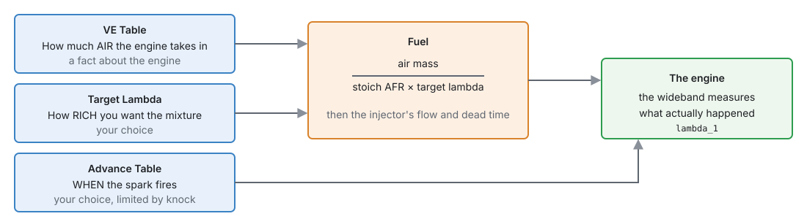
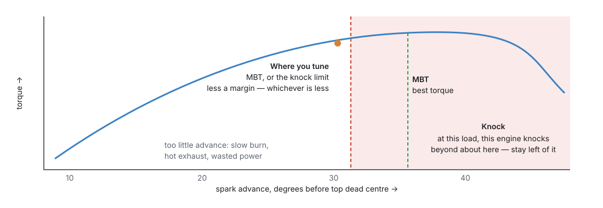
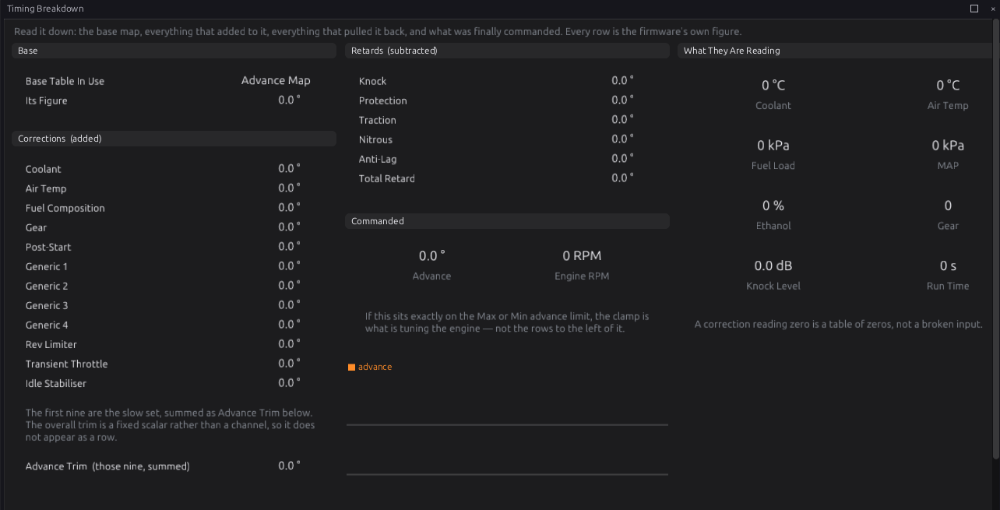
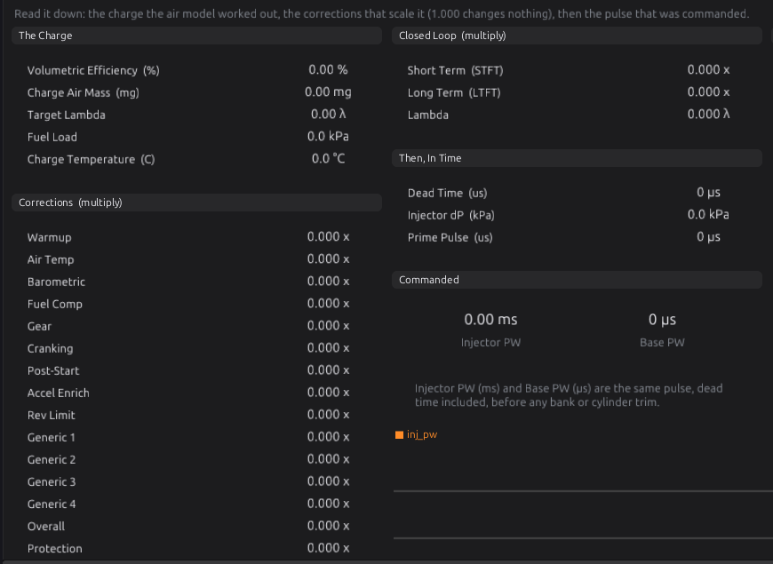
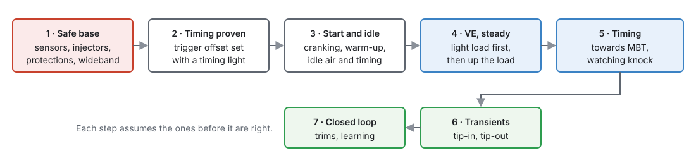

Tuning principles¶
Basic → Intermediate
In one sentence: tuning is describing the engine's breathing truthfully (VE), choosing the mixture you want (Target Lambda), and firing the spark as early as the engine can use without knocking — in that order, one change at a time, with a wideband and a log to tell you the truth.
Overview¶
Basic
Part III set every module up. This part is about the numbers: how to find the right ones on a real engine. This chapter is the thinking behind chapters 38 to 42; read it before you start.
An engine can be destroyed in seconds
A lean mixture or too much advance under load melts pistons and breaks ring lands before you hear anything. Do not load an engine until the safety steps in this chapter are done, and never tune alone on a public road.
Concepts¶
Intermediate
1 · Three tables, three separate questions¶

This ECU works out fuel from the air, not from a table of injector times (chapter 19):
fuel = air mass ÷ (stoich AFR × target lambda), where air mass comes from the VE Table.
That separation is the most useful thing to understand about tuning this ECU:
- The VE Table describes a fact about the engine: how well it fills its cylinders at each speed and load. It is right when the ECU's idea of the air matches the real air. You do not make an engine richer by raising VE; you make the VE wrong.
- Target Lambda is your choice of mixture. Change it and the fuel follows, with the VE Table untouched.
- So, when the measured lambda does not match the target, the VE is wrong at that point (assuming the injector data and sensors are right). Correct the VE, never the target.
The same holds for the injectors: their flow and dead time (chapter 19) must be right first, or every VE number compensates for injector error and goes wrong again when anything changes.
2 · Lambda¶
Lambda is the actual air–fuel ratio divided by the stoichiometric ratio: 1.00 is exactly enough air to burn all the fuel, below 1 is rich, above 1 is lean. The ECU works in lambda, so the same numbers serve petrol and ethanol.
Common starting points (check what your engine's builder recommends):
| Condition | Target lambda |
|---|---|
| Idle and light cruise | 1.00 (needed for a catalyst and closed loop) |
| Part load, moderate | 0.95–1.00 |
| Full load, not boosted | 0.86–0.90 |
| Boost | 0.75–0.82, richer with more boost |
| Cold start and warm-up | richer: the warm-up corrections handle it (chapter 19) |
Richer than best power cools the combustion and gives knock margin, which is why boosted engines run rich. Leaner than 1.00 under load is how engines melt. The ECU keeps targets between 0.5 and 1.5.
The measured value is only as good as the wideband: it must be warmed up, reading correctly, and in the exhaust before any leak (chapter 11).
3 · Spark timing¶

- Burning takes time, so the spark fires before top dead centre to have peak pressure just after it. The best point, MBT (minimum advance for best torque), moves with speed, load, mixture and temperature.
- Past MBT there is no gain, only more cylinder pressure and heat.
- At high load many engines knock before they reach MBT. Then the right advance is the knock limit less a margin.
- Too little advance is safe for the pistons but not free: the burn is still going when the exhaust valve opens, so the exhaust and the turbo run hot.
Knock control (chapter 30) is a safety net, not a tuning tool. A tune that relies on knock retard to be safe is too advanced.
The ECU adds corrections to the Advance Table and takes retards off (chapter 20). The Timing Breakdown page shows each part live, so you can see which one you are looking at.

4 · One change at a time, and log it¶
- Change one thing, then measure. Two changes at once cannot be told apart.
- Steady state before transients. Tune a cell while the engine sits in it; tip-in and tip-out fuel (chapter 19) come after, because they are measured against a correct steady-state base.
- Log everything (chapter 42) and read the log, not the gauge. A reading is only good once the engine has settled in the cell and the wideband has caught up with it.
- The Fuel Breakdown page shows every part of the fuel calculation for the current moment: use it to see what the ECU believes before blaming the table.

5 · Closed loop hides errors¶
Closed-loop lambda (chapter 23) moves the fuel until the wideband reads the target, which is what you want on the road and exactly what you do not want while tuning VE: the error you are looking for has already been corrected. Tune VE with closed loop off, or read the trims as the VE error — which is what the Auto Tune does (chapter 40).
Procedure¶
Basic

- Safe base. Sensors calibrated and reading (chapter 17), injector data entered (chapter 19), a wideband working, and the protections switched on (chapter 29) — the protection levels are off in a new tune. Set a low rev limit (chapter 27) and, on a turbo engine, a low boost target (chapter 24).
- Timing proven. Set the trigger offset with a timing light, and check the timing does not move with engine speed (chapter 16).
- Start and idle. Cranking fuel and advance, warm-up, and idle (chapters 19, 20 and 21).
- VE at steady state. Light load first, then build up the load (chapter 38), with closed loop off.
- Timing. Towards MBT, or the knock limit less a margin (chapter 39), with knock monitoring (chapters 30 and 41).
- Transients. Tip-in and tip-out fuel (chapter 38).
- Closed loop. Switch closed loop on and let it learn (chapters 23 and 40).
Examples¶
Intermediate
Example 1 — lean at 4000 RPM, 80 kPa
Target 0.95, measured 1.02. The mixture has 7 % too little fuel, so the ECU thinks there is 7 % less air than there really is: raise that VE cell by about 7 % (1.02 ÷ 0.95 = 1.074). The target stays 0.95.
Example 2 — richer at full load
The engine runs well at 0.88 but you want margin on a hot day. Change Target Lambda to 0.85 in the full-load cells. The VE Table is not touched: the ECU adds the fuel itself.
Example 3 — adding advance
At 3000 RPM and 100 kPa the cell has 24°. Two degrees more gives more torque on the dyno; two more gives no more torque. Stay at 26° (MBT), even though the engine did not knock at 28°.
Pitfalls and troubleshooting¶
Basic → Advanced
| Pitfall | Why it hurts | Instead |
|---|---|---|
| Richening by raising VE | The VE is now wrong; every other table built on it is too | Change Target Lambda |
| Tuning VE with closed loop on | The trim hides the error | Closed loop off, or read the trims (chapter 40) |
| Tuning before injector data is right | VE absorbs injector error and is wrong at every other voltage and pressure | Injector flow and dead time first |
| Tuning on a cold engine | Warm-up corrections are adding fuel | Tune VE warm; tune warm-up separately |
| Trusting the gauge during a change | The wideband lags and the engine has not settled | Wait, then read the log |
| Relying on knock retard | A knock event has already happened | Tune to the knock limit less a margin |
| Loading the engine with protections off | Nothing reacts to a fault | Enable them first (chapter 29) |